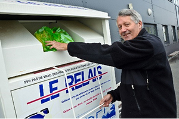
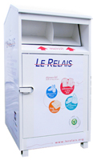

Un projet pilote de borne connectée

Si vous déposez régulièrement vos vieux vêtements dans les bornes "Le Relais"
des compagnons d'Emmaüs, il vous est peut-être déjà arrivé, comme moi, de
tomber sur une borne pleine, dans laquelle il n'était plus possible de
déposer quoi que ce soit... Pour éviter cette situation, une scop, membre
d'Emmaüs, a décidé de lancer un projet pilote de Relais connecté. Située
à Chanteloup-les-Vignes, EBS Le Relais Val de Seine développe une activité
de réinsertion sociale qui, tout comme les autres scop de l'union des Relais,
est centrée sur la collecte, le tri, et la revalorisation des vieux textiles.
Jusqu'ici, la scop utilisait un logiciel maison d'optimisation des tournées.
Il fonctionne sur la base d'indicateurs de fréquence moyenne de remplissage
calculés à partir de données saisies par les salariés lors de leurs tournées
de collecte, via PDA. "Nous testons actuellement des capteurs connectés qui
nous permettrait de suivre le niveau de remplissage de nos bornes en temps
réel", confirme Jean-François Luthun, PDG d'EBS Le Relais Val de Seine. En
ligne de mire : disposer d'un outil permettant de faire face à tout
impondérable pouvant engendrer une saturation de la borne (une braderie,
un vide grenier, un déménagement à proximité...).
Que deviennent vos dons ?

Une valorisation de vos vêtements à 97%.
Grâce à vos dons, le Relais récupère chaque semaine plus de 1 800 tonnes de textiles,
ce qui représente 55 % de la collecte en France. Ces textiles sont acheminés vers
14 centres de tri, pour connaître différents sorts selon leur état et leur qualité :
- Les textiles utilisables en l’état sont revendus à bas prix dans les 73 boutiques Ding
Fring du Relais ou destinés à l’export.
- Les textiles qui ne peuvent plus être portés sont recyclés par le Relais dans le
cadre de la production de chiffons d’essuyage pour l’industrie, ou pour la fabrication
de matières à partir desquelles est notamment fabriqué l’isolant Métisse®.
- La matière non valorisée représente 3 % des volumes collectés, dont la majeure
partie sera utilisée en valorisation énergétique.
Au Relais, chaque centime généré est réinvesti à des fins de lutte contre l’exclusion.
En développant l’activité textile et en prenant en charge toute la filière – la collecte,
le tri, la valorisation –, le Relais crée des emplois durables pour des personnes
en difficulté. En 30 ans, plus de 2 200 emplois ont ainsi été créés. Dans le même
temps, le Relais est devenu leader de la filière en France, démontrant que
professionnalisme et solidarité sont parfaitement compatible.